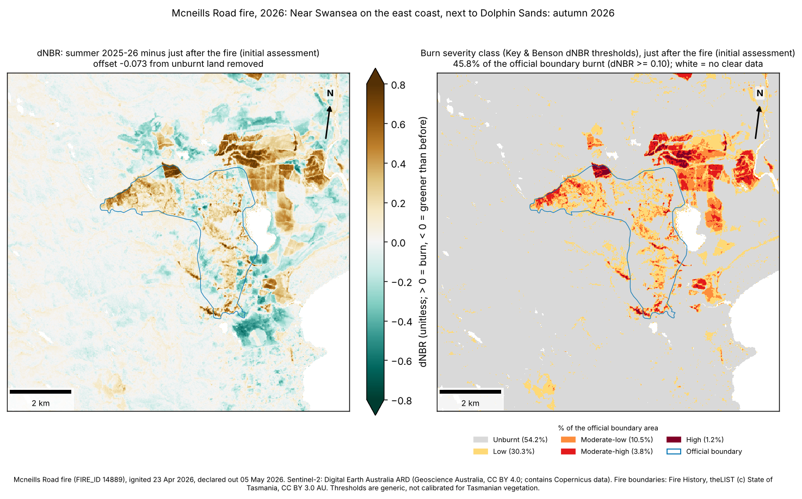

Mcneills Road fire, 2026
Ignited 23 Apr 2026, declared out 05 May 2026 (undetermined)
Near Swansea on the east coast, next to Dolphin Sands: autumn 2026
1,064 haofficial area
46%of it burnt (dNBR >= 0.10)
5%moderate-high or high severity
n/atoo soon to measure recovery
Initial assessment from images just after the fire: no full summer has passed yet, so seasonal drying adds some false low severity.
9% of unburnt land nearby also shows a burn-like drop (clearing, development, harvesting or drying): read low severity with caution.